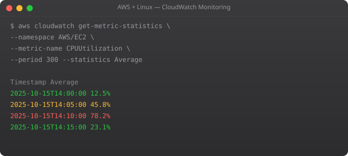

You cannot manage what you cannot measure. CloudWatch is AWS's built-in monitoring service -- it collects metrics, aggregates logs, triggers alarms, and powers dashboards. Setting up proper monitoring before you have a production incident is what separates proactive operations from reactive firefighting.
# Basic EC2 metrics (5-minute intervals, free):
CPUUtilization # CPU usage percentage
NetworkIn / NetworkOut # Network traffic bytes
DiskReadOps / DiskWriteOps # Disk I/O operations
StatusCheckFailed # Instance and system status checks
# View via CLI
aws cloudwatch get-metric-statistics \
--metric-name CPUUtilization \
--namespace AWS/EC2 \
--dimensions Name=InstanceId,Value=i-1234567890abcdef \
--start-time 2026-01-01T00:00:00Z \
--end-time 2026-01-01T01:00:00Z \
--period 300 \
--statistics Average# Install CloudWatch Agent on EC2
wget https://s3.amazonaws.com/amazoncloudwatch-agent/ubuntu/amd64/latest/amazon-cloudwatch-agent.deb
sudo dpkg -i amazon-cloudwatch-agent.deb
# Create config with wizard
sudo /opt/aws/amazon-cloudwatch-agent/bin/amazon-cloudwatch-agent-config-wizard
# Or create /opt/aws/.../config.json manually:
{
"metrics": {
"namespace": "MyApp",
"metrics_collected": {
"mem": {"measurement": ["mem_used_percent"]},
"disk": {"measurement": ["disk_used_percent"],
"resources": ["/", "/data"]},
"cpu": {"measurement": ["cpu_usage_active"], "totalcpu": true}
}
},
"logs": {
"logs_collected": {
"files": {"collect_list": [
{"file_path": "/var/log/myapp/app.log",
"log_group_name": "myapp", "log_stream_name": "{instance_id}"}
]}
}
}
}
# Start agent
sudo systemctl start amazon-cloudwatch-agentaws cloudwatch put-metric-alarm \
--alarm-name "High-CPU" \
--alarm-description "CPU above 80% for 5 minutes" \
--metric-name CPUUtilization \
--namespace AWS/EC2 \
--dimensions Name=InstanceId,Value=i-1234567890abcdef \
--statistic Average \
--period 300 \
--threshold 80 \
--comparison-operator GreaterThanThreshold \
--evaluation-periods 1 \
--alarm-actions arn:aws:sns:ap-south-1:123456789:alerts \
--ok-actions arn:aws:sns:ap-south-1:123456789:alertsMetrics are numerical time-series data (CPU%, request count). Stored for 15 months, queryable, alarmable. Logs are text records of events. Stored in log groups, searchable with Log Insights. Both are essential -- metrics for alerting, logs for debugging.
CloudWatch > Log Insights > Select log group > Run query. Example: fields @timestamp, @message | filter @message like /ERROR/ | sort @timestamp desc | limit 100. Log Insights supports SQL-like syntax for filtering, aggregating, and visualising log data.
Metrics: default EC2 metrics are free. Detailed monitoring (1-minute) costs extra. Logs: set retention periods (delete logs older than 30 days). Log Insights queries are charged per GB scanned. Custom metrics: $0.30 per metric/month.
Create an SNS topic, subscribe your email or PagerDuty/Slack webhook. When alarm triggers, SNS sends notifications to all subscribers. For critical alarms: PagerDuty for on-call rotation. For warnings: Slack channel. For all alerts: email.
Console: CloudWatch > Dashboards > Create Dashboard. Add widgets: graphs for metrics, log query results, and alarm status. Share dashboards with read-only links. Use dashboards to create an operations overview showing the health of all your AWS resources at a glance.
In Part 12, we deploy a complete real application end-to-end on AWS -- combining everything from this series.
← Back to Blog# CloudWatch Synthetics runs headless browser scripts
# that continuously test your application from the outside
# Create a canary via CLI
aws synthetics create-canary --name myapp-health-check --code S3Bucket=my-canary-bucket,S3Key=canary.zip --artifact-s3-location s3://my-canary-artifacts/health-check --execution-role-arn arn:aws:iam::123456789:role/canary-role --schedule Expression="rate(5 minutes)" --runtime-version syn-nodejs-puppeteer-6.2
# Simple canary script (canary.js):
const synthetics = require("Synthetics");
const checkApi = async () => {
const response = await synthetics.executeHttpStep(
"Check /health endpoint",
{
hostname: "api.myapp.com",
method: "GET",
path: "/health",
port: 443,
protocol: "https:",
}
);
if (response.statusCode !== 200) {
throw new Error("Health check failed: " + response.statusCode);
}
};
exports.handler = async () => { await checkApi(); };# Install X-Ray SDK in Python
pip install aws-xray-sdk
# Instrument Flask application
from aws_xray_sdk.core import xray_recorder, patch_all
from aws_xray_sdk.ext.flask.middleware import XRayMiddleware
app = Flask(__name__)
xray_recorder.configure(service="myapp-api", region="ap-south-1")
XRayMiddleware(app, xray_recorder)
patch_all() # Auto-instrument boto3, requests, SQLAlchemy
@app.route("/api/orders")
def get_orders():
# X-Ray automatically traces this request
# Including any downstream AWS calls (S3, DynamoDB, etc.)
with xray_recorder.in_subsegment("database-query"):
orders = db.query(Order).all()
return jsonify([o.to_dict() for o in orders])import boto3
from datetime import datetime
cloudwatch = boto3.client("cloudwatch", region_name="ap-south-1")
def track_business_metric(metric_name, value, unit="Count", dimension=None):
dimensions = []
if dimension:
dimensions.append({"Name": dimension[0], "Value": dimension[1]})
cloudwatch.put_metric_data(
Namespace="MyApp/Business",
MetricData=[{
"MetricName": metric_name,
"Value": value,
"Unit": unit,
"Timestamp": datetime.utcnow(),
"Dimensions": dimensions
}]
)
# Track business events
track_business_metric("OrdersCreated", 1, dimension=("Environment", "production"))
track_business_metric("PaymentAmount", 999.99, unit="None")
track_business_metric("ActiveUsers", active_user_count)# Enable Container Insights for EKS
aws eks update-addon --cluster-name my-cluster --addon-name amazon-cloudwatch-observability --addon-version v1.7.0-eksbuild.1
# This automatically collects:
# - CPU and memory usage per pod
# - Network throughput per service
# - Container restart counts
# - Disk I/O per node
# View in console: CloudWatch > Container Insights > EKS Clusters
# Useful Container Insights queries:
# Find pods with high CPU
SHOW AVG(CpuUtilized) AS "CPU (cores)"
FROM SCHEMA("ContainerInsights", ClusterName, Namespace, PodName)
WHERE ClusterName = 'my-cluster'
ORDER BY "CPU (cores)" DESC
LIMIT 20import json, time
def log_with_metrics(order_id, amount, processing_time_ms):
"""Emit structured log that CloudWatch parses for metrics."""
metric_log = {
"_aws": {
"Timestamp": int(time.time() * 1000),
"CloudWatchMetrics": [{
"Namespace": "MyApp/Orders",
"Dimensions": [["Environment"]],
"Metrics": [
{"Name": "OrderAmount", "Unit": "None"},
{"Name": "ProcessingTime", "Unit": "Milliseconds"}
]
}]
},
"Environment": "production",
"OrderId": order_id,
"OrderAmount": amount,
"ProcessingTime": processing_time_ms
}
print(json.dumps(metric_log))
# CloudWatch automatically creates metrics from this log!